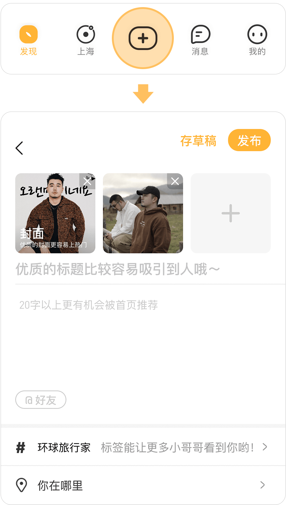
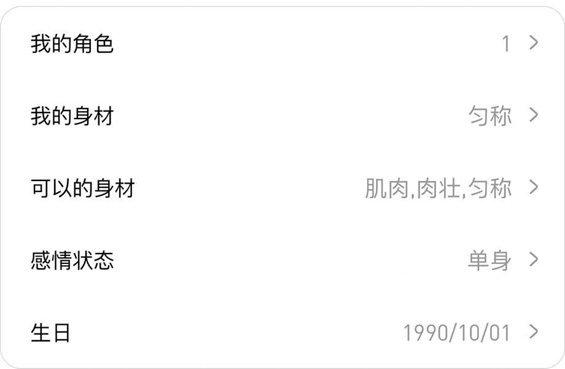
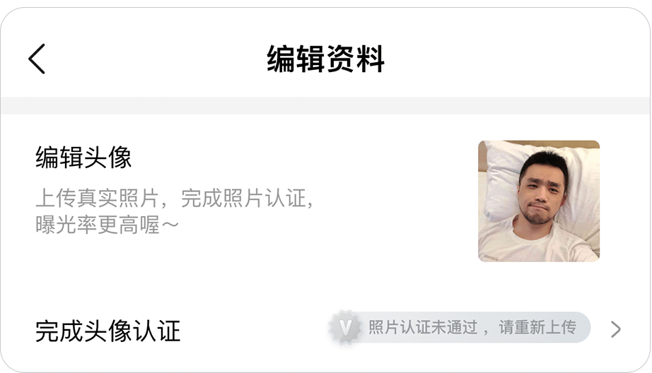
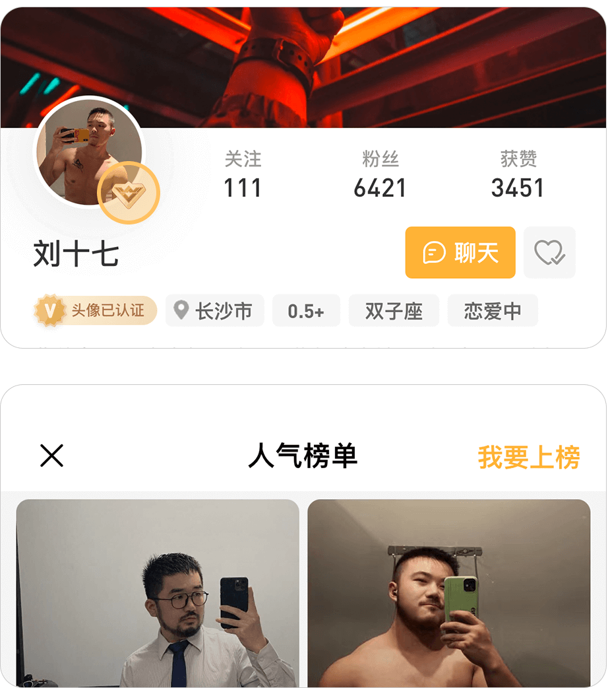
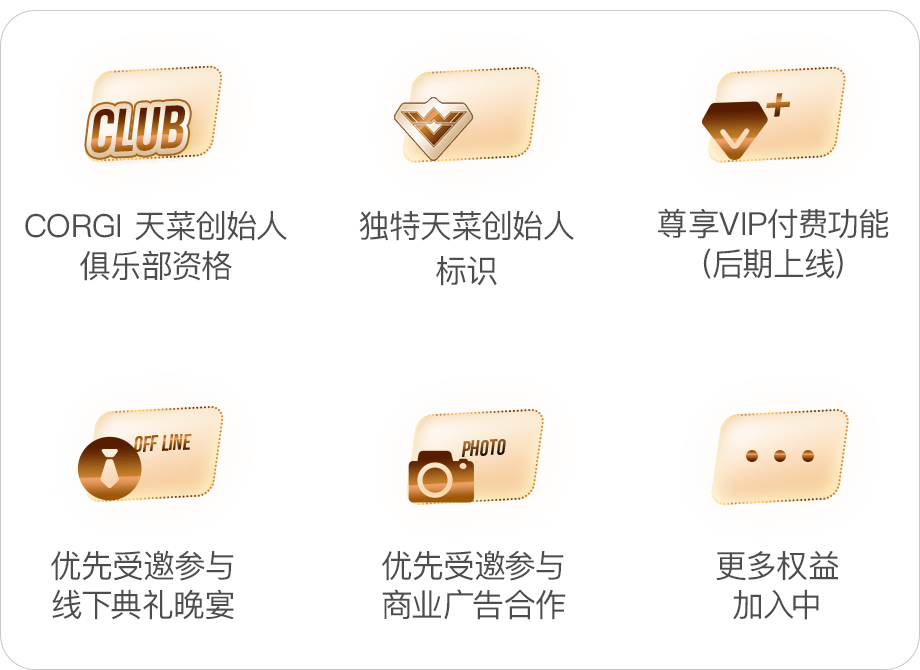

1. CORGI是⼀款什么APP
CORGI是年轻基友首选的社交生活社区。
我们相信每一种不同的生活，都值得被记录，被分享，被点赞！快来跟CORGI一起探索多元生活吧！
2. CORGI主要有哪些功能？
• 分享探索 - 分享多元生活，探索内容达人、商户
• 关注评价 - 总有你想关注的小哥哥/被种草的小店，给他一个评价让社群更有意思
• 撩菜互动 - 内容和同城场景，让撩菜更简单
• 商户活动 - 各城市商户新活动，一目了然
3. 如何让平台小哥哥认识你？
点击界面下方的“+”，选择你想发布的图片，选择相应的话题标签。整体图片清晰、美观好看、有趣。
4. 如何让系统推荐自己更喜欢的内容
新用户首次注册时，真实填写自己的资料，也可以之后在“我的-编辑资料”里从新选择。
5. 如何获得更多流量推荐？
• 发布动态越多且都加上话题标签上榜概率越大。
• 动态被赞次数越多，很有可能上榜首！
• 清晰认证的头像也是上榜的必备条件。
• 申请成为天菜创始人，还有机会上封面。
6. 如何修改/认证头像和基本资料
在“我的”页面顶部点击编辑资料，点击自己的头像再点击右上角“…”图标，选择替换头像，替换完成后可重新完成认证头像
7. 如何成为天菜创始人
• App内所有天菜创始人主页点logo，点击进入申请页面。
• 每日榜单右上角“我要上榜”也可以进入申请。
8. 天菜创始人有哪些福利
